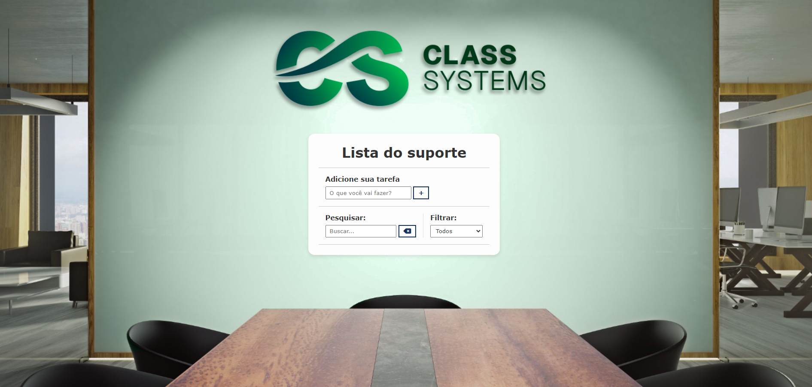
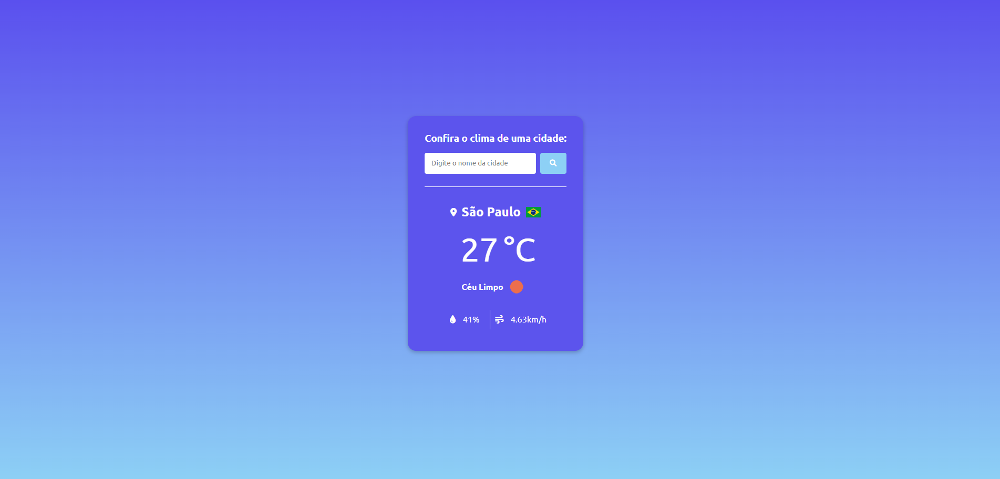
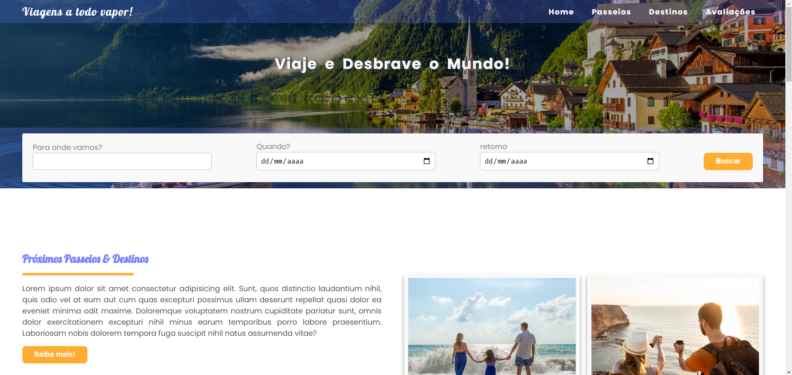

Projetos Recentes





Sou um desenvolvedor Full-Stack dedicado a transformar ideias em soluções digitais inovadoras e eficazes. Com uma abordagem cuidadosa tanto no front-end quanto no back-end, meu trabalho vai além de simplesmente codificar. Busco criar experiências digitais que sejam intuitivas, funcionais e impactantes.
Profissional em criar websites que sejam bonitos, fáceis de usar e que funcionem bem em qualquer dispositivo. Tenho experiência em várias tecnologias, como PHP, JavaScript, Node, MySQL, React, HTML e CSS, o que me permite cuidar tanto do visual quanto da parte técnica. Gosto de pensar em soluções que tornem a navegação mais intuitiva e que realmente façam a diferença para quem usa.
Leia maisGosto de trabalhar nos bastidores, garantindo que tudo funcione de forma fluida e eficiente. Minha experiência com PHP, Node.js e MySQL me permite criar sistemas confiáveis e bem estruturados, focados em desempenho e estabilidade. Adoro encontrar soluções para desafios técnicos e me preocupo em deixar o código limpo e fácil de entender para outros desenvolvedores. No fim das contas, meu objetivo é facilitar o trabalho de quem está na linha de frente, para que tudo se conecte e funcione sem problemas
Leia maisAdoro criar aplicativos que sejam práticos, intuitivos e que realmente melhorem o dia a dia das pessoas. Tenho experiência com o desenvolvimento de apps usando tecnologias como Flutter, Dart e back-ends robustos com PHP e Node.js. Gosto de pensar em cada detalhe, desde a performance até a interface, garantindo que o usuário tenha uma experiência suave e funcional. Além disso, me preocupo em deixar o código organizado e escalável para facilitar futuras melhorias e atualizações."
Leia mais
Seja você um parceiro em potencial ou alguém curioso para saber mais sobre meu trabalho, convido você a explorar meu portfólio. Estou sempre aberto a novas oportunidades e conversas sobre tecnologias avançadas na programação e estruturação de softwares.
Leia mais